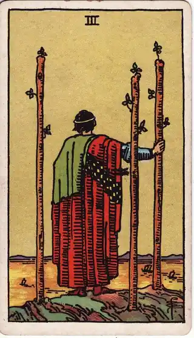
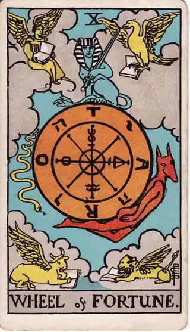
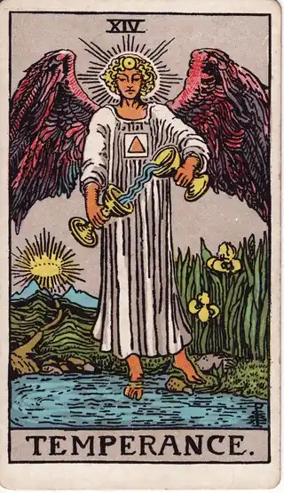

READING
今の仕事を続けるか迷うときに。キャリアの踊り場の見極め方
・ DECIDE. 編集部
今の職場に、決定的な不満があるわけではない。仕事も一通りこなせるようになって、周りからの評価も悪くない。なのに、3年後や5年後の自分を想像したとき、「このまま同じ場所に居続けていいのか」と、ふと足元が揺らぐような感覚になる。そんな時期を過ごしていませんか。
先に言っておくと、この記事のゴールは、「転職すべきかどうか」の結論を出すことではありません。ゴールは、焦って転職サイトを眺めるのでも、考えるのをやめて目の前の仕事に没頭するのでもなく、自分の「渇きの正体」を知ることです。正体が分かれば、変えるべきは場所なのか、関わり方なのかが見えてきます。
POINT 01 変えるべきは「場所」か「関わり方」か
今の仕事が物足りなく感じられるとき、原因は大きく二つに分かれます。一つは、環境そのものが合っていないケース。仕事内容、評価の仕組み、会社の方向性。もう一つは、環境は悪くないのに、その中での「働き方や関わり方」が固まってしまったケースです。裁量が欲しいのに任せてもらえない。新しいことに挑戦したいのに、安定した役割だけが回ってくる。
この二つを見誤ると、代償は大きくなります。本当は関わり方の問題だったのに場所を変えてしまえば、新しい職場でも同じ不満を繰り返すことになりかねません。逆に、環境の問題なのに我慢を続ければ、時間だけが過ぎていきます。だから、動き出す前に「自分の渇きはどこから来ているのか」を、まず言葉にする必要があります。
渇きの正体は、大きな出来事よりも、日々の小さな違和感の中に現れます。「また同じ会議か」と感じた瞬間。逆に、時間を忘れて取り組めた仕事の内容。そうした断片を集めていくと、自分が本当は何に飢えているのかが、輪郭を持ち始めます。
注意したいのは、この時期に陥りがちな両極端です。焦って転職サイトを眺め、勢いのまま動いてしまうこと。あるいは、考えること自体をやめて、目の前の仕事に没頭してやり過ごすこと。どちらも「足元が揺らぐ感覚」から目をそらすための反応で、渇きの正体は分からないまま残ります。立ち止まっているように見えるこの時期こそ、実はじっくり観察するには最適なタイミングです。今の職場にいるからこそ、手応えも違和感も、現場の生の材料として集められるからです。
POINT 02 カードの視点で見る

ワンドの3は、丘の上から出航する船を見渡す人物の姿です。すでに出した船、つまりこれまでのキャリアの蓄積を土台に、次の展開を展望する状態を表します。「今の延長線の先に、何が見えるか」。焦って丘を降りる前に、まず景色全体を眺める。このカードは、蓄積を捨てるのではなく、蓄積の上から未来を見る視点をくれます。

運命の輪は、回り続ける大きな輪の姿で、「転機」や「巡り合わせ」を表します。キャリアには、自分の努力だけでは動かせない流れがあります。会社の方針転換、業界の変化、思わぬ引き抜きや異動の話。今の停滞感が、自分の問題なのか、流れが止まっているだけの時期なのか。このカードは、焦りを「待つべきものの見極め」に変えてくれます。

節制は、二つの杯のあいだで水を移し替える天使の姿です。極端に振れず、配分を調整しながらバランスを取ることを表します。「続けるか、辞めるか」の二択に自分を追い込む前に、今の仕事と学びの時間、副業や休息の配分を少しずつ組み替える。中間の選択肢を設計する視点です。答えは白か黒かだけとは限りません。
POINT 03 日々の違和感をログに溜めて、決断の材料にする
キャリアのような大きな決断こそ、一日で答えを出すべきではありません。おすすめは、日々の小さな違和感と手応えを、決断ログに溜めていくことです。仕事でモヤモヤした日は、その理由を一言。逆に、やりがいを感じた日は、何が満たされたのかを一言。それだけで構いません。
数週間分が溜まったら、振り返ってみてください。「自分は裁量がないことに、一番ストレスを感じている」「新しい仕組みを作る仕事の日に、いつも前向きになっている」。一回ごとの感情は気まぐれでも、蓄積された記録は、気のせいでは片付けられない事実として浮かび上がります。渇きの正体は、たいていそこに書かれています。
記録に残すことは、将来の自分への投資でもあります。半年後にまた「続けるべきか」と迷ったとき、過去の自分の記録が物差しになります。前回は何に迷い、何が見えたのか。ゼロから迷い直すのではなく、続きから考えられる。それが、後悔のない次の一手を打つための土台になります。年齢を重ねた転職の考え方は、30代の転職で迷うときの記事でも整理しています。
POINT 04 自分への問いかけ
最後に、静かな時間に自分へ問いかけてみてください。今の不満は、場所を変えれば本当に消えますか。ここ数週間で、一番モヤモヤしたのはどんな場面でしたか。逆に、時間を忘れたのはどんな仕事でしたか。今の仕事の配分を少しだけ組み替えられるとしたら、何を増やして、何を減らしたいですか。そして、1年後の自分に「良い判断だった」と言ってもらうために、今知っておくべきことは何ですか。
キャリアの踊り場は、停滞ではなく、次を見渡すための場所です。焦らなくて大丈夫。ただ、見渡した景色は、ちゃんと記録に残しておいてください。それが、あなたの次の一手を、確かなものにします。